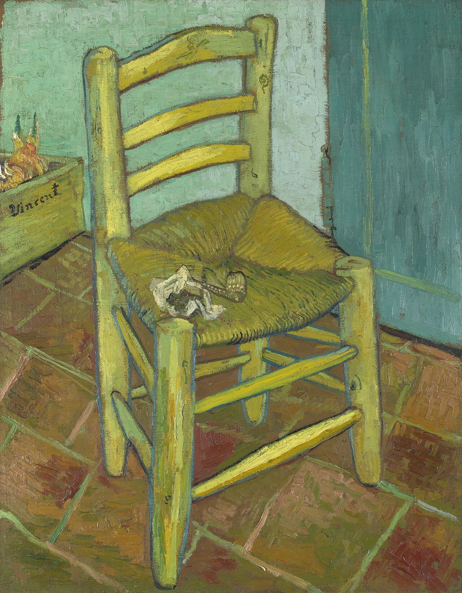

梵高的椅子 Van Gogh's Chair
梵高的椅子 / Van Gogh's Chair · 梵高 / Vincent van Gogh · 1888年11月 / November 1888 · 伦敦国家美术馆 / The National Gallery, London
图片：Wikimedia Commons，公有领域 / Image: Wikimedia Commons, public domain

发现 · Discover
简朴的椅子 A simple chair
一把草编座面的木椅，让人想起他早年在荷兰画过的农民椅子。
A wooden chair with a straw seat, recalling the peasant chairs he painted in the Netherlands in the 1880s.
烟斗和烟草袋 Pipe and tobacco
椅子上放着他的烟斗和烟草袋，也许代表简单的家常慰藉。父亲去世后不久，他曾画过父亲的烟斗。
His pipe and tobacco pouch rest on the seat, perhaps simple, homely comforts. Shortly after his father died, he had sketched his father's pipe.
签名的箱子 The signed box
椅子左后方有一个签着"Vincent"的矮箱子，里面像是发芽的洋葱。它的含义至今是个谜。
Behind the chair is a low box signed "Vincent", holding what look like sprouting onions. Its meaning remains a mystery.
墙的颜色 The wall
真实的墙是刷白的，但他把它画成了浅蓝绿色，好衬托黄色的椅子。
The real walls were whitewashed, but he painted them light turquoise to set off the yellow chair.
白天 Daylight
他把自己的椅子画在明亮的白天里；高更的椅子则画在夜晚的灯光下。
He painted his own chair in bright daylight; Gauguin's chair was painted at night, by lamplight.
卧室里的椅子 In the bedroom
卧室那幅画里，也有两把几乎一样的椅子。
Two very similar chairs appear in The Bedroom.
故事 · The story
ACT I 第一幕 · 两把椅子 Two chairs
1888年11月，高更来到阿尔勒不久，梵高画了两把椅子：一把是他自己的，一把是高更的。两幅画是一对。
In November 1888, soon after Gauguin arrived in Arles, Van Gogh painted two chairs: his own, and Gauguin's. The two paintings were a pair.
1888年11月 · 伦敦国家美术馆 / November 1888 · The National Gallery, London
ACT II 第二幕 · 白天与夜晚 Day and night
他自己的椅子简朴，画在白天，用黄与蓝；高更的扶手椅优雅精致，画在夜晚的煤气灯下，用红与绿。这盏煤气灯，是他一个月前才装的，部分原因是想让高更愿意来南方。
His own chair is plain, painted by day in yellow and blue. Gauguin's armchair is elegant, painted at night under gaslight, in red and green. He had installed the gaslight just a month earlier, partly to encourage Gauguin to come south.
高更的椅子 · 1888 · 阿姆斯特丹梵高博物馆 / Gauguin's Chair · 1888 · Van Gogh Museum, Amsterdam
ACT III 第三幕 · 分开的椅子 Chairs apart
一个月后，黄房子里的生活破碎了，高更离开了阿尔勒。今天，梵高的椅子在伦敦，高更的椅子在阿姆斯特丹。
A month later, life in the Yellow House fell apart, and Gauguin left Arles. Today Van Gogh's chair is in London; Gauguin's is in Amsterdam.
两把空椅子，一把在伦敦，一把在阿姆斯特丹。 Two empty chairs: one in London, one in Amsterdam.
作品档案 · Artwork record
| 画家（生卒年） · Artist (dates) | 文森特·梵高（1853–1890） / Vincent van Gogh (1853–1890) |
|---|---|
| 画名 · Title | 梵高的椅子 / Van Gogh's Chair |
| 年份 · Date | 1888年11月，阿尔勒；1889年1月修改 / Arles, November 1888; reworked January 1889 |
| 材质 · Medium | 布面油画 / Oil on canvas |
| 尺寸 · Dimensions | 91.8 × 73 cm |
| 收藏地 · Collection | 伦敦国家美术馆 / The National Gallery, London |
| 博物馆作品页 · Museum page | https://www.nationalgallery.org.uk/paintings/vincent-van-gogh-van-gogh-s-chair |
关于画家 · About the artist
文森特·梵高（1853–1890），荷兰画家。他将近27岁才开始画画，短短十年留下了大量作品。1888年他来到法国南部的阿尔勒，在那里画出了许多最著名的画。
Vincent van Gogh (1853–1890) was a Dutch painter. He began painting at around 27 and left a huge body of work in just ten years. In 1888 he moved to Arles in the south of France, where he painted many of his best-known works.
更多梵高的画 · More by Vincent van Gogh